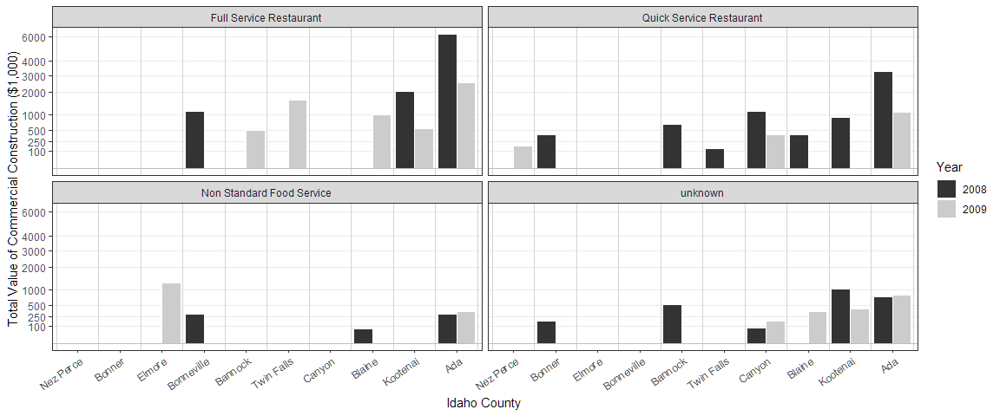
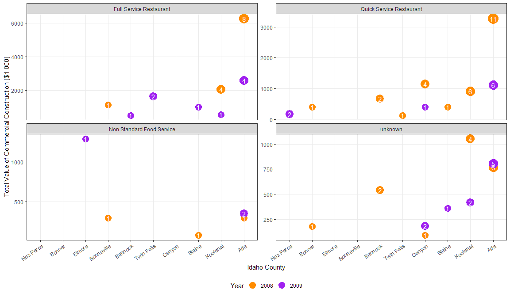
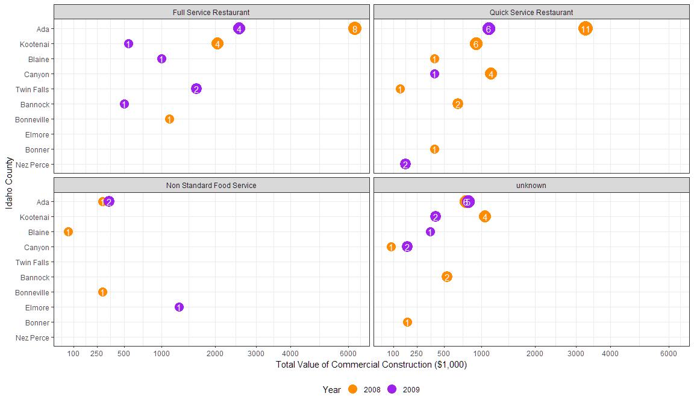

{kind=link}
Restaurants Idaho
Building the data
library(pacman)
#p_load_gh("hathawayj/buildings")
p_load(buildings, tidyverse, stringr)
#forcats and stringr used from library(tidyverse)
# Code from description
not_restaurants <- c("development","Food preperation center", "Food Services center","bakery","Grocery","conceession","Cafeteria", "lunchroom","school","facility"," hall ")
standalone_retail <- c("Wine","Spirits","Liquor","Convenience","drugstore","Flying J", "Rite Aid ","walgreens ","Love's Travel ")
full_service_type <- c("Ristorante","mexican","pizza ","steakhouse"," grill ","buffet","tavern"," bar ","waffle","italian","steak house")
quick_service_type <- c("coffee"," java "," Donut ","Doughnut"," burger ","Ice Cream ","custard ","sandwich ","fast food "," bagel ")
quick_service_names <- restaurants$Restaurant[restaurants$Type %in% c("coffee","Ice Cream","Fast Food")]
full_service_names <- restaurants$Restaurant[restaurants$Type %in% c("Pizza","Casual Dining","Fast Casual")]
# Clean up word formatting
not_restaurants <- str_to_lower(not_restaurants)
standalone_retail <- str_to_lower(standalone_retail)
full_service_type <- str_to_lower(full_service_type)
quick_service_type <- str_to_lower(quick_service_type)
quick_service_names <- str_to_lower(quick_service_names)
full_service_names <- str_to_lower(full_service_names)
# create visualization data
dat <- buildings::buildings0809 %>%
select(-County) %>%
as.tibble() %>%
left_join(climate_zone_fips, by=c("FIPS.state", "FIPS.county"))
dat <- dat %>%
filter(Type == "Food_Beverage_Service") %>%
mutate(ProjectTitle = str_to_lower(ProjectTitle),
Type2 = case_when(
str_detect(ProjectTitle, paste(not_restaurants, collapse = "|")) ~ "Non Standard Food Service",
str_detect(ProjectTitle, paste(standalone_retail, collapse = "|")) ~ "Stand-alone Retail",
str_detect(ProjectTitle, paste(c(full_service_type, full_service_names), collapse = "|")) ~ "Full Service Restaurant",
str_detect(ProjectTitle, paste(c(quick_service_type, quick_service_names), collapse = "|")) ~ "Quick Service Restaurant"),
build_type = case_when(
str_detect(ProjectTitle, "alteration") ~ "Alteration",
str_detect(ProjectTitle, "addition") ~ "Addition",
str_detect(ProjectTitle, "renov") ~ "Alteration",
!(str_detect(ProjectTitle, paste(c("alteration", "addition"), collapse = "|"))) ~ "New")
) %>%
mutate(Type2 = case_when(
!is.na(Type2) ~ Type2,
is.na(Type2) & SqFt >= 4000 ~ "Full Service Restaurant",
is.na(Type2) & SqFt < 4000 & build_type == "New" ~ "Quick Service Restaurant",
is.na(Type2) ~ "unknown"))
# Over 4,000 ADD and NEW gets assigned to Sit Down Restaurants
# Under 4,000 sqft NEW gets assigned to Fast Food
# all Type == "Food/Beverage Service" that don't get grouped based on the above are called "Unknown"Typical bar plot
dat %>%
group_by(Type2, County, Year) %>%
summarize(value = sum(Value1000), pop = min(Pop100), n = n()) %>%
ungroup() %>%
mutate(Type2 = fct_relevel(Type2, "Full Service Restaurant", "Quick Service Restaurant")) %>%
ggplot(aes(x = fct_reorder(str_replace(County, " ID", ""), value, sum), y = value, fill = Year)) +
geom_bar(stat = "identity", position = "dodge", color = "white") +
facet_wrap(~Type2, scales = "free_y", ncol = 2) + theme_bw() +
theme(panel.grid.minor = element_blank(), panel.grid.major.x = element_blank(),
axis.text.x = element_text(angle = 35, vjust = 1, hjust = 1), legend.position = "bottom") +
geom_vline(xintercept = seq(.5, 15, by = 1), color = "lightgrey") +
geom_hline(yintercept = 0, color = "grey") +
scale_fill_grey() +
labs(x = "Idaho County", y = "Total Value of Commercial Construction ($1,000)" )
(ggp <- dat %>%
group_by(Type2, County, Year) %>%
summarize(value = sum(Value1000), pop = min(Pop100), n = n()) %>%
ungroup() %>%
mutate(Type2 = fct_relevel(Type2, "Full Service Restaurant", "Quick Service Restaurant"),
Year = parse_number(Year)) %>%
complete(Year = full_seq(Year, period = 1), Type2, County, fill = list(value = 0, pop = 0, n = 0)) %>%
ggplot(aes(x = fct_reorder(str_replace(County, " ID", ""), value, sum), y = value, fill = factor(Year))) +
geom_bar(stat = "identity", position = "dodge", color = "white") +
facet_wrap(~Type2, scales = "free_y", ncol = 2) + theme_bw() +
theme(panel.grid.minor = element_blank(), panel.grid.major.x = element_blank(),
axis.text.x = element_text(angle = 35, vjust = 1, hjust = 1)) +
geom_vline(xintercept = seq(.5, 15, by = 1), color = "lightgrey") +
geom_hline(yintercept = 0, color = "grey") +
scale_fill_grey() +
labs(x = "Idaho County", y = "Total Value of Commercial Construction ($1,000)", fill = "Year" ))ggp + facet_wrap(~Type2, ncol = 2) +
scale_y_continuous(trans = "sqrt", breaks = c(100, 250, 500, 1000, 2000, 3000, 4000, 6000))
Moving beyond bars
## Without Bars
(ggpoint <- dat %>%
group_by(Type2, County, Year) %>%
summarize(value = sum(Value1000), pop = min(Pop100), n = n()) %>%
ungroup() %>%
mutate(Type2 = fct_relevel(Type2, "Full Service Restaurant", "Quick Service Restaurant"),
County = fct_reorder(str_replace(County, " ID", ""), value, sum)) %>%
#complete(nesting(Type2, Year), County, fill = list(value = 0, pop = 0, n = 0)) %>%
# filter(County == "Bonneville ID")
ggplot(aes(x = County, y = value, color = Year)) +
geom_point(aes(size = n)) +
geom_text(aes(label = n), color = "white") +
facet_wrap(~Type2, scales = "free_y", ncol = 2) + theme_bw() +
theme(panel.grid.minor = element_blank(), axis.text.x = element_text(angle = 35, vjust = 1, hjust = 1), legend.position = "bottom") +
scale_color_manual(values = c("darkorange", "purple" )) +
scale_x_discrete(drop = FALSE) +
scale_size_continuous(breaks = c(1, 3, 5, 8, 10), range = c(5, 8), guide = "none") +
labs(x = "Idaho County", y = "Total Value of Commercial Construction ($1,000)" )) +
guides(color = guide_legend(override.aes = list(size = 5)))
ggpoint + facet_wrap(~Type2, ncol = 2) + guides(color = guide_legend(override.aes = list(size = 5)))ggpoint + facet_wrap(~Type2, ncol = 2) +
scale_y_continuous(trans = "sqrt", breaks = c(100, 250, 500, 1000, 2000, 3000, 4000, 6000)) + coord_flip() + theme_bw() + guides(color = guide_legend(override.aes = list(size = 5))) + theme(legend.position = "bottom")
Bar plot with individual jobs
### Now look at individual jobs ###
###
dat %>%
mutate(County = fct_reorder(County, Value1000, sum)) %>%
filter(Type2 %in% c("Full Service Restaurant", "Quick Service Restaurant")) %>%
ggplot(aes(x = Year, y = Value1000)) +
geom_bar(stat = "identity", aes(group = fct_reorder(ProjectTitle, Value1000, .desc = FALSE)),
color = "lightgrey", show.legend = FALSE) + theme_bw() +
facet_wrap(~County, nrow = 1) +
labs(x = "Year", y = "Total Value of Commercial Construction ($1,000)", title = "Total cost of restaurant construction") dat %>%
mutate(County = fct_reorder(County, Value1000, sum)) %>%
filter(Type2 %in% c("Quick Service Restaurant")) %>%
ggplot(aes(x = Year, y = Value1000)) +
geom_bar(stat = "identity", aes(group = fct_reorder(ProjectTitle, Value1000, .desc = FALSE)),
color = "lightgrey", show.legend = FALSE) + theme_bw() +
facet_wrap(~County, nrow = 1) +
labs(x = "Year", y = "Total Value of Commercial Construction ($1,000)", title = "Total cost of fast-food restaurant construction")